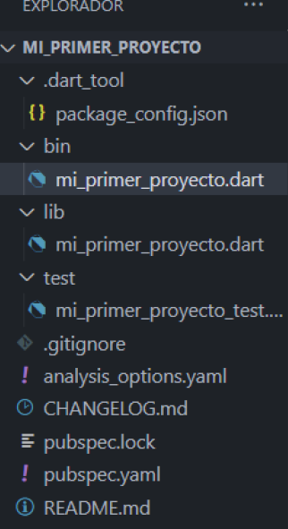

1. Creación de un proyecto en Dart
Un proyecto Dart tiene una estructura organizada donde se distribuyen los diferentes archivos que lo componen. Cada una de estas partes cumple una función específica sobre el proyecto, tales como el control de versionado, la gestión de librerías y las configuraciones del entorno.

1.1. Comandos de creación
Para crear un nuevo proyecto estructurado desde la terminal, ejecutamos el siguiente comando:
dart create "NOMBRE_PROYECTO"
1.2. Paquetes y Directorios Principales
Una vez generado el proyecto, se creará un árbol de directorios con la siguiente distribución[cite: 5]:
my_dart_project/
├── .dart_tool/ # Almacenamiento interno de herramientas (gestionado por Dart; no editar)
├── bin/ # Scripts ejecutables de la línea de comandos
│ └── main.dart # Punto de entrada principal para la ejecución (Entry point)
├── lib/ # Código público principal compartido con otros proyectos
│ ├── src/ # Detalles de implementación privada e interna
│ │ └── internal.dart
│ └── my_library.dart # API pública principal exportada para los usuarios externos
├── test/ # Pruebas de código unitarias y de integración
│ └── main_test.dart
├── CHANGELOG.md # Historial detallado de cambios de versión del proyecto
├── LICENSE # Texto de licencia de código abierto o propietaria
├── README.md # Descripción general del proyecto y guía de uso
├── pubspec.lock # Registro con las versiones exactas instaladas de cada dependencia (Bloqueo automático)
└── pubspec.yaml # Dependencias solicitadas, recursos estáticos y metadatos del proyecto
2. Archivos de Configuración (pubspec.yaml y CHANGELOG.md)
2.1. El archivo pubspec.yaml
El archivo pubspec.yaml es la pieza central de metadatos del proyecto. Define la identidad de la aplicación e indica las restricciones del SDK y sus dependencias externas:
name: mi_primer_proyecto
description: A sample command-line application.
version: 1.0.0
environment:
sdk: '>=2.18.0 <3.0.0'
dependencies:
path: ^1.8.0
dev_dependencies:
lints: ^2.0.0
test: ^1.16.0
2.2. El archivo CHANGELOG.md
El archivo CHANGELOG.md se utiliza como un diario del proyecto para reflejar y documentar detalladamente los cambios que se van aplicando en cada una de las versiones publicadas. Una estructura inicial básica luce de la siguiente manera:
## 1.0.0
- Initial version.
4. Estructura de datos (List)
Las listas en Dart permiten agrupar colecciones indexadas de datos. Dart nos provee de múltiples métodos nativos para su manipulación directa:
// Declaración e inicialización de una lista de enteros
List<int> milista = [1, 2, 3, 4, 5, 6, 7];
// Añade un elemento al final de la lista
milista.add(8);
// Elimina la primera coincidencia exacta encontrada
milista.remove(8);
// Obtiene la cantidad total de elementos (tamaño)
int tamano = milista.length;
// Devuelve el primer elemento de la colección
int primero = milista.first;
4.1. Recorrido correcto de colecciones
Aunque existe el método genérico forEach, su uso para operaciones condicionales complejas se considera una mala praxis en Dart debido a la legibilidad y rendimiento[cite: 82, 83]. La estructura óptima recomendada es el bucle for..in[cite: 89, 90]:
// Recorrido correcto mediante for..in
for (int element in milista) {
if (element % 2 == 0) {
print(element);
}
}
4.2. Eliminación condicionada
Si deseas borrar elementos que cumplan una condición específica sin necesidad de recorrer manualmente e iterar la lista, puedes emplear de forma compacta removeWhere[cite: 94, 95]:
// Borrado directo de todos los números pares de la lista
milista.removeWhere((element) => element % 2 == 0);
5. Estructuras de Datos: Map
En Dart, las estructuras de tipo diccionario o tablas asociativas se definen mediante la clase Map[cite: 169]. Un Map representa una colección estructurada de pares formados por una clave y un valor[cite: 170]. Permite manejar tipos de datos heterogéneos según la restricción que usemos al declararlo[cite: 171].
// Estructura conceptual general
var identifier = { key1:value1, key2:value2 };
// Declaración clásica instanciando el objeto
Map infoAlumno = Map();
infoAlumno['nombre'] = 'root';
infoAlumno['apellido'] = 'ABCD1234';
infoAlumno['edad'] = 25;
// Declaración literal (Forma recomendada)
Map infoAlumnoLiteral = {
'nombre': 'root',
'apellido': 'ABCD1234',
'edad': 25,
};
5.1. Métodos nativos de uso frecuente en Map
La API de Dart proporciona un robusto abanico de utilidades para el tratamiento directo de mapas asociativos[cite: 190]:
addAll(Map<K, V> other): Incorpora de manera masiva todos los pares clave/valor del mapa proporcionado al mapa actual[cite: 191, 192].clear(): Purga y remueve la totalidad de elementos del mapa dejándolo vacío[cite: 196, 197].containsKey(Object? key): Evalúa mediante un booleano si la clave especificada existe dentro de la colección[cite: 198, 199].containsValue(Object? value): Evalúa mediante un booleano si el valor especificado está presente en el mapa[cite: 200, 201].remove(Object? key): Elimina de la colección la clave solicitada junto con su valor vinculado[cite: 204, 205].removeWhere(bool test(K key, V value)): Realiza un borrado condicional selectivo eliminando las entradas que cumplan la condición lógica evaluada[cite: 206, 207].
Resumen de Estructura y Colecciones
- Los proyectos Dart se estructuran con directorios fijos:
bin/para ejecución ylib/para métodos genéricos. - El archivo
pubspec.yamlcentraliza el control de versiones del SDK y las dependencias del ecosistema. - La interpolación mediante el uso de
$y${}es la manera óptima de formatear texto combinando variables o expresiones en Dart. - Para manejar e iterar colecciones como
Listde manera correcta, prioriza el uso de buclesfor..infrente aforEach. - Funciones de orden superior como
removeWhereagilizan la mutación segura de los datos bajo filtros específicos. - Los
Mapoperan con esquemas eficientes de clave/valor proporcionando utilidades nativas complejas de filtrado comoremoveWhere.